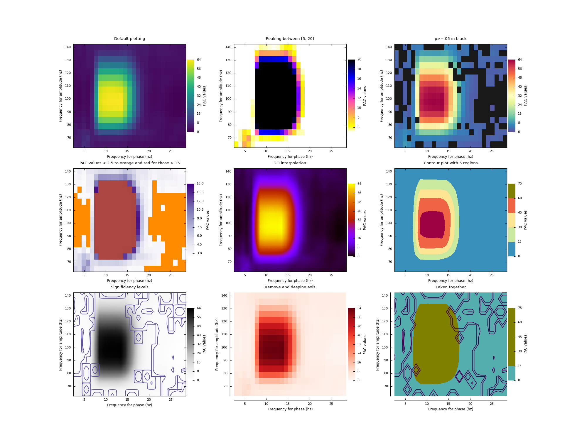

Note
Click here to download the full example code
Compare visualization methods¶
This script present how to make a 2D comodulogram plot, with all of the possible parameters.
import matplotlib.pyplot as plt
from tensorpac.utils import pac_signals_wavelet
from tensorpac import Pac
plt.style.use('seaborn-paper')
# First, we generate a dataset of signals artificially coupled between 10hz
# and 100hz. By default, this dataset is organized as (ntrials, npts) where
# npts is the number of time points.
n = 10 # number of datasets
data, time = pac_signals_wavelet(fpha=10, famp=100, noise=1., ntrials=n,
npts=4000)
# First, let's use the MVL, without any further correction by surrogates :
p = Pac(idpac=(5, 3, 3), fpha=(4, 18, 1, .3), famp=(60, 150, 5, 2),
dcomplex='wavelet', width=7)
xpac, pval = p.filterfit(1024, data, axis=1, nperm=110, get_pval=True)
# Now, we plot the result by taking the mean across the dataset dimension.
plt.figure(figsize=(20, 15))
plt.subplot(3, 3, 1)
p.comodulogram(xpac.mean(-1), title='Default plotting')
plt.subplot(3, 3, 2)
p.comodulogram(xpac.mean(-1), title='Peaking between [5, 20]', vmin=5,
vmax=20, cmap='gnuplot2_r')
plt.subplot(3, 3, 3)
# Ideally, the p-values should be corrected across trials because taking the
# mean is not correct. This is only illustrative.
p.comodulogram(xpac.mean(-1), title='p>=.05 in black', cmap='Spectral_r',
pvalues=pval.mean(-1), bad=(.1, .1, .1), p=.05)
plt.subplot(3, 3, 4)
p.comodulogram(xpac.mean(-1), title="PAC values < 2.5 to orange and "
"red for those > 15",
cmap='Purples', vmin=2.5, under='darkorange', vmax=15,
over='#ab4642')
plt.subplot(3, 3, 5)
p.comodulogram(xpac.mean(-1), title='2D interpolation', cmap='gnuplot',
interp=(.1, .1))
plt.subplot(3, 3, 6)
p.comodulogram(xpac.mean(-1), title='Contour plot with 5 regions',
cmap='Spectral_r', plotas='contour', ncontours=5)
plt.subplot(3, 3, 7)
p.comodulogram(xpac.mean(-1), title='Significiency levels',
cmap='Greys', pvalues=pval.mean(-1), levels=[0.01, 0.05],
levelcmap='Spectral_r', interp=(.1, .1))
plt.subplot(3, 3, 8)
p.comodulogram(xpac.mean(-1), title='Remove and despine axis', cmap='Reds',
rmaxis=True, dpaxis=True)
plt.subplot(3, 3, 9)
p.comodulogram(xpac.mean(-1), title='Taken together', rmaxis=True, dpaxis=True,
cmap='Spectral_r', plotas='contour', ncontours=5,
pvalues=pval.mean(-1), levels=[0.005, 0.01, 0.05],
levelcmap='viridis', vmin=5, under='gray', vmax=20,
over='olive')
plt.show()
Total running time of the script: ( 0 minutes 46.667 seconds)